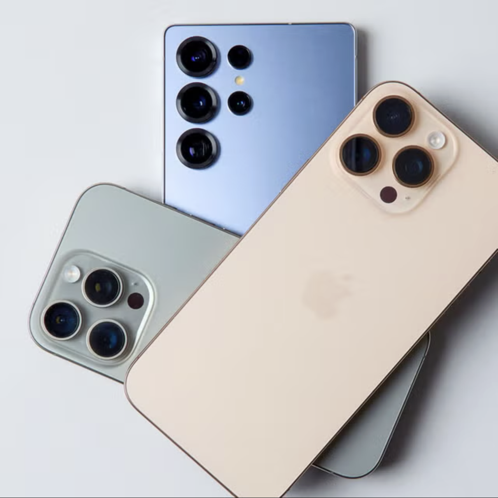
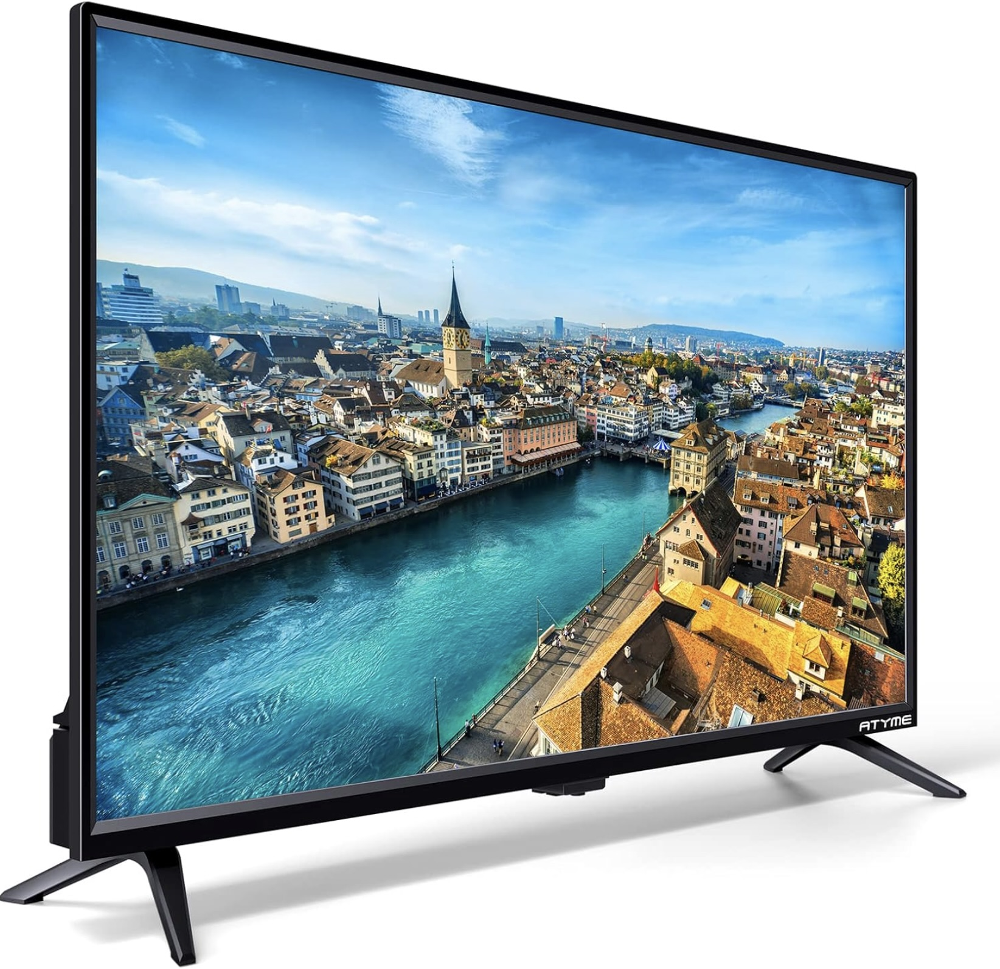
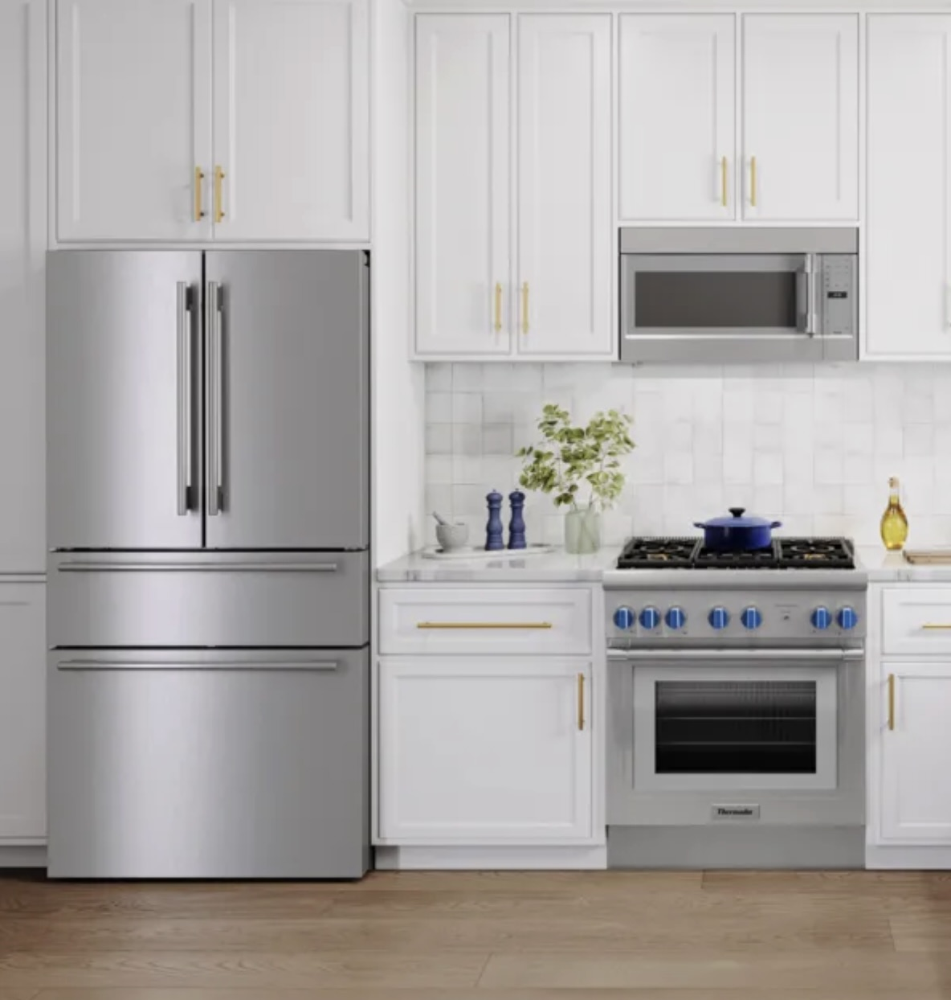
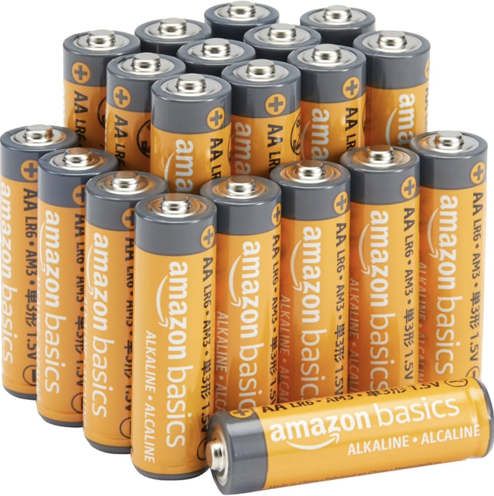

Report Recap
“Refresh. Recycle. Renew."
"Power the future, recycle today.”

Small IT & Telecom devices
smartphones, old cell phones,
small tablets, routers
IT Equipments
Laptops, Desktop, Computers

Entertainment Electronics
TV

Small electrical appliances & gadgets
Hair-dryers, Kitchen gadgets, Toasters,
Small home appliances, Toys, Chargers

Large household appliances & Major appliances
Refrigerators/Freezers, Washing machines, Ovens

Mixed/broken electronics where components are hidden
Items with batteries, circuit boards,
rare-earth / V precious metal content